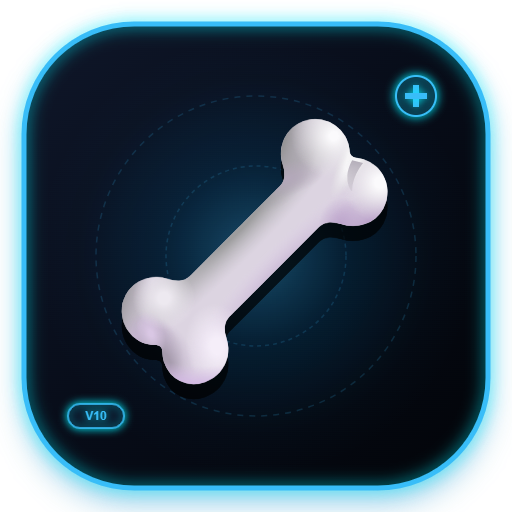

嚴格遵循 NAV 解剖命名規範、真實 SM-2 間隔重複、錯題即刻強化、IndexedDB 本機持久化與 Firestore 批次安全防禦。請登入 Google 帳號以連線雲端題庫。
(選取本機包含解剖圖的「參考資料」資料夾。圖片將自動快取至 IndexedDB，日後免重複選取！)
請回答紅色區塊構造名稱：
💡 提示：點擊任一單字即可單獨展開該單字的「全視角專項特訓」！
💡 題目辭典：可檢索全部題目、查詢專有名詞、對照原圖與個人學習紀錄。
支援 360° 自由旋轉、腹側仰視胸骨全景、解剖區域隔離檢視與單骨 X-Ray 半透明/單一還原。
以下為 AI-OCR 對比 39 張圖譜後，檢測出雲端題庫與課本印刷字存在拼字差異的 11 項候選題目。 💡 安全機制：為避免影響您刻意建立的「無字空遮罩」或自訂命名，系統不會自動修改任何題目。您可以點擊「👁️ 看圖」在畫布上高亮檢視該紅框位置，僅勾選您確認要修正的項目！